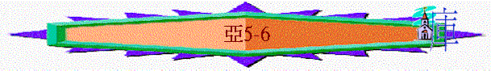

|
耶和華心�媟巨鉹齞� |
|||
|
為選民犯罪而大發烈怒 |
為重建錫安而極其火熱 |
為復興錫安而極其火熱 |
為彌賽亞國而親自成就 |
|
1:2-6 |
1:7-6:15 |
7-8 |
9-14 |
6.第六異象----飛行書卷----咒詛惡人(5:1-4)
A.異象
「我又舉目觀看，見有一飛行的書卷。他問我說：「你看見什麼？」我回答說：「我看見一飛行的書卷，長二十肘，寬十肘。」」5:1-2
a.書卷----代表神的咒詛與審判
b.飛行的----代表發出來
c.長二十肘、寬十肘----正是會幕聖所及聖殿廊子的尺寸，可能此書與聖殿有關
B.解釋
a.咒詛的人----偷竊、起假誓的
「他對我說：「這是發出行在遍地上的咒詛。凡偷竊的必按卷上這面的話除滅；凡起假誓的必按卷上那面的話除滅。」」5:3
〜若咒詛與聖殿有關，可能當時有些人偷竊建殿的材料，或者起假誓，承諾會建殿，但至終沒行上，神必追討他們的惡行。
b.咒詛的內容----全然被毀
「萬軍之耶和華說：我必使這書卷出去，進入偷竊人的家和指我名起假誓人的家，必常在他家裡，連房屋帶木石都毀滅了。」5:4
7.第七異象----量器----驅除罪惡(5:5-11)
A.量器的預表
「與我說話的天使出來，對我說：「你要舉目觀看，見所出來的是什麼？」我說：「這是什麼呢？」他說：「這出來的是量器。」他又說：「這是惡人在遍地的形狀。」」5:5-6
〜「量器」原文伊法，是舊約猶太人量度乾量最大的容器。
〜量器的意思代表惡人在遍地的形狀，可能如量器般多，所犯的罪之大。
B.婦人的預表
「（我見有一片圓鉛被舉起來。）這坐在量器中的是個婦人。天使說：「這是罪惡。」他就把婦人扔在量器中，將那片圓鉛扔在量器的口上。」5:7-8
〜婦人代表罪惡，惡人與罪惡被圓鉛的上蓋蓋著，可能代表世上的罪惡與罪人被上頭來的力量困著，等候審判
C.抬量器的預表
「我又舉目觀看，見有兩個婦人出來，在他們翅膀中有風，飛得甚快，翅膀如同鸛鳥的翅膀。他們將量器抬起來，懸在天地中間。我問與我說話的天使說：「他們要將量器抬到那裡去呢？」他對我說：「要往示拿地去，為他蓋造房屋；等房屋齊備，就把他安置在自己的地方。」」5:9-11
〜「鸛鳥」翅膀有力，可飛遠程，「示拿」即巴比倫，人類起初悖逆的地方，神會將在以色列的罪帶至巴比倫，可能代表神要除去以色列的罪惡。
8.第八異象----四輛車與四馬----審判列國(6:1-8)
A.異象
「我又舉目觀看，見有四輛車從兩山中間出來；那山是銅山。第一輛車套著紅馬，第二輛車套著黑馬。第三輛車套著白馬，第四輛車套著有斑點的壯馬。」6:1-3
a.四輛車
b.兩山中間出來，山是銅山
c.分別套四馬：紅馬、黑馬、白馬、斑點壯馬(眾數)
B.解釋
「天使回答我說：「這是天的四風，是從普天下的主面前出來的。套著黑馬的車往北方去，白馬跟隨在後；有斑點的馬往南方去。壯馬出來，要在遍地走來走去。天使說：「你們只管在遍地走來走去。」他們就照樣行了。他又呼叫我說：「看哪，往北方去的已在北方安慰我的心。」」6:5-8
〜「已在北方安慰了我的心」應指神審判北方(可能指以色列人的仇敵----巴比倫)，所以祂的心得安慰
〜若我們以審判為主題，可有以下解釋
a.四輛車----代表神的使者，或神差出來的工具作審判之用，也是天的四風，風代表使者，神要審判全地
b.銅山----指從普天下的主出發，祂的國權如銅山一樣堅固
c.馬----黑馬後有白馬往北方，可能指神用瑪代及波斯管教巴比倫，有斑點的馬往南方，不單去南方也要走遍其它地方，可能指後來的羅馬或希臘，審判南方的埃及或日後的列國
〜所以神為重建錫安而熱心的，祂必成就祂的工作，也會審判攔阻及敵對以色列的邦國
9.附註----約書亞加冠的預表----起來建殿(6:9-15)
〜神一切熱心重建錫安，清除敵人的計劃已說明，現在祭司要作甚麼？是時候要起來建殿了！
A.約書亞的加冠
「耶和華的話臨到我說：「你要從被擄之人中取黑玳、多比雅、耶大雅的金銀。這三人是從巴比倫來到西番雅的兒子約西亞的家裡。當日你要進他的家，取這金銀做冠冕，戴在約撒答的兒子大祭司約書亞的頭上，」6:9-11
〜神要三個人從家中取金銀做冠冕,，但是我們只知道他們是在被擄歸回人中的，其他關乎他們的背景卻不知道。
∼但神用他們的金銀為約書亞作冠冕，目的應是肯定約書亞的位份及能力，也鼓勵他承擔了這榮耀職份後，要起來建殿。
B.彌賽亞的預表
「對他說，萬軍之耶和華如此說：看哪，那名稱為大衛苗裔的，他要在本處長起來，並要建造耶和華的殿。他要建造耶和華的殿，並擔負尊榮，坐在位上掌王權；又必在位上作祭司，使兩職之間籌定和平。」6:12-13
「並且被建造在使徒和先知的根基上，有基督耶穌自己為房角石，各（或作：全）房靠他聯絡得合式，漸漸成為主的聖殿。你們也靠他同被建造，成為神藉著聖靈居住的所在。」弗2:20-22
〜這加冠冕的舉動更預表將來有一位會成為祭司，又成為王，在兩職之間和平共存，祂也要建立神的殿(可能指屬靈的殿或日後的教會)，祂就是將要來的基督。
C.事奉者的肯是
「這冠冕要歸希連（就是黑玳）、多比雅、耶大雅，和西番雅的兒子賢（就是約西亞），放在耶和華的殿裡為記念。」」6:14
〜多比雅、耶大雅、西番雅的兒子賢及希連，他們也為神家出一份力，他們也得冠冕，但是放在神殿中作記念，更代表為神殿或祭司熱心者，神是記念的。
D.遠方人的參與
「遠方的人也要來建造耶和華的殿，你們就知道萬軍之耶和華差遣我到你們這裡來。你們若留意聽從耶和華你們神的話，這事必然成就。」6:15
〜至遠方的人可能指是其他列國，至終外邦人也參與建立神的殿（來敬拜神也可算是建立聖殿），更証明神的話，神對建殿必成的應許終實現。